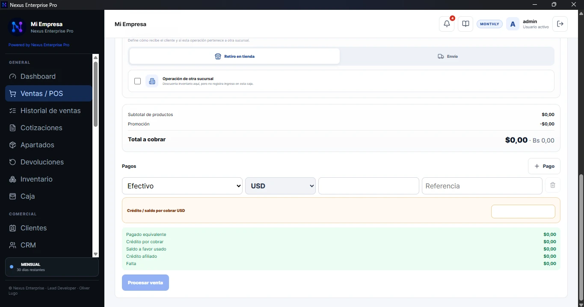
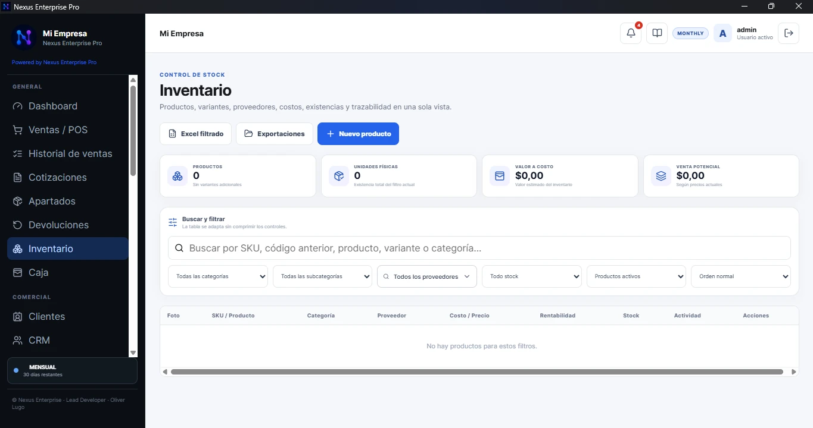
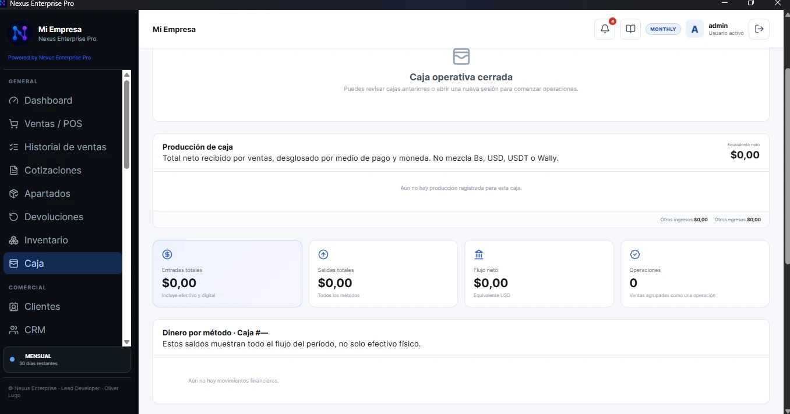
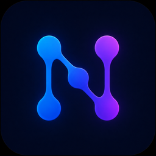

Ventas / POS
Pagos por moneda, venta actual, descuentos, crédito, entrega y trazabilidad en un flujo directo.
Ventas, inventario, caja, clientes, compras, finanzas, reportes y operación Multi‑PC en un sistema creado para simplificar trabajos grandes y convertirlos en flujo.




Dashboard ejecutivo
Nexus no está planteado como módulos aislados. La venta afecta inventario, caja, clientes y reportes; la operación permanece conectada y trazable.
Busca, cobra, combina medios de pago, gestiona descuentos, cliente, envío y documentos desde el POS.
Stock, variantes, costos, proveedores e imágenes se mantienen dentro del mismo contexto operativo.
Producción por método de pago y moneda, entradas, salidas, arqueo y cierre sin mezclar el efectivo físico con lo digital.
Selecciona un área y descubre cómo la interfaz real prioriza velocidad, control y utilidad.
Pagos por moneda, venta actual, descuentos, crédito, entrega y trazabilidad en un flujo directo.
Productos, stock, variantes, costos, proveedores, filtros y rentabilidad en una sola vista.
Desglose por medios de pago, monedas, flujo, arqueo y cierre descriptivo.
Cliente, historial, postventa, seguimiento comercial y saldos conectados con su operación.

Una PC principal y terminales autorizadas trabajando sobre las mismas reglas sin compartir la base directamente.
Indicadores, rendimiento y lectura operativa para tomar decisiones con información conectada.
Nexus Enterprise Terminal está incluido en Premium. El servidor principal conserva la fuente de verdad y las terminales operan por red local.
Base central, servidor LAN y administración.
Mismos módulos, reglas y permisos autorizados.

Productos, precios y disponibilidad publicados desde el ecosistema Nexus. El Catálogo Web tiene activación adicional y está incluido con el plan Permanente.
Una operación comercial que utiliza Nexus como eje para conectar diferentes áreas del negocio.
Free permite conocer el sistema. Premium desbloquea la experiencia completa y Terminal Multi‑PC. El plan Permanente incluye Catálogo Web.
Creamos soluciones de software, webs, automatizaciones, apps e integraciones adaptadas a problemas reales.
Herramientas propias para procesos que no encajan en productos genéricos.
Experiencias digitales, portales, catálogos y aplicaciones conectadas al negocio.
Integraciones, procesos y flujos que reducen trabajo repetitivo.
Desde muy joven encontró en el diseño y la tecnología una forma de construir soluciones. En 2026, esa experiencia evolucionó en Nexus: un proyecto creado para simplificar operaciones complejas y convertirlas en herramientas útiles.
“Tecnología que conecta tu empresa.”
Prueba el sistema, conoce Premium y cuéntanos cómo opera tu empresa.